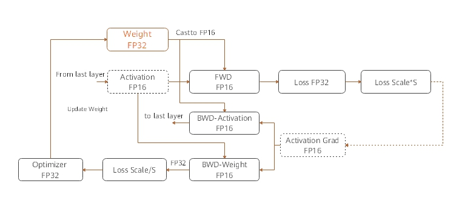

Mixed Precision¶
Overview¶
The mixed precision training method accelerates the deep learning neural network training process by using both the single-precision and half-precision data formats, and maintains the network precision achieved by the single-precision training at the same time. Mixed precision training can accelerate the computation process, reduce memory usage, and enable a larger model or batch size to be trained on specific hardware.
Computation Process¶
The following figure shows the typical computation process of mixed precision in MindSpore.

Parameters are stored in FP32 format.
During the forward computation, if an FP16 operator is involved, the operator input and parameters need to be cast from FP32 to FP16.
The loss layer is set to FP32.
During backward computation, the value is multiplied by Loss Scale to avoid underflow due to a small gradient.
The FP16 parameter is used for gradient computation, and the result is cast back to FP32.
Then, the value is divided by Loss scale to restore the multiplied gradient.
The optimizer checks whether the gradient overflows. If yes, the optimizer skips the update. If no, the optimizer uses FP32 to update the original parameters.
This document describes the computation process by using examples of automatic and manual mixed precision.
Automatic Mixed Precision¶
To use the automatic mixed precision, you need to invoke the corresponding API, which takes the network to be trained and the optimizer as the input. This API converts the operators of the entire network into FP16 operators (except the BatchNorm and Loss operators). In addition, after the mixed precision is employed, the loss scale must be used to avoid data overflow.
The procedure is as follows:
Introduce the MindSpore mixed precision API.
Define the network. This step is the same as the common network definition. (You do not need to manually configure the precision of any specific operator.)
Use the amp.build_train_network() API to encapsulate the network model and optimizer. In this step, MindSpore automatically converts the operators to the required format.
A code example is as follows:
# The interface of Auto_mixed precision
from mindspore.train import amp
# Define network
class LeNet5(nn.Cell):
def __init__(self):
super(LeNet5, self).__init__()
self.conv1 = nn.Conv2d(1, 6, 5, pad_mode='valid')
self.conv2 = nn.Conv2d(6, 16, 5, pad_mode='valid')
self.fc1 = nn.Dense(16 * 5 * 5, 120)
self.fc2 = nn.Dense(120, 84)
self.fc3 = nn.Dense(84, 10)
self.relu = nn.ReLU()
self.max_pool2d = nn.MaxPool2d(kernel_size=2)
self.flatten = P.Flatten()
def construct(self, x):
x = self.max_pool2d(self.relu(self.conv1(x)))
x = self.max_pool2d(self.relu(self.conv2(x)))
x = self.flatten(x)
x = self.relu(self.fc1(x))
x = self.relu(self.fc2(x))
x = self.fc3(x)
return x
# Initialize network
net = LeNet5()
# Define training data, label and sens
predict = Tensor(np.ones([1, 1, 32, 32]).astype(np.float32) * 0.01)
label = Tensor(np.zeros([1, 10]).astype(np.float32))
scaling_sens = Tensor(np.full((1), 1.0), dtype=mstype.float32)
# Define Loss and Optimizer
net.set_train()
loss = MSELoss()
optimizer = Momentum(params=net.trainable_params(), learning_rate=0.1, momentum=0.9)
net_with_loss = WithLossCell(net, loss)
train_network = amp.build_train_network(net_with_loss, optimizer, level="O2")
# Run training
output = train_network(inputs, label, scaling_sens)
Manual Mixed Precision¶
MindSpore also supports manual mixed precision. It is assumed that only one dense layer in the network needs to be calculated by using FP32, and other layers are calculated by using FP16. The mixed precision is configured in the granularity of cell. The default format of a cell is FP32.
The following is the procedure for implementing manual mixed precision:
Define the network. This step is similar to step 2 in the automatic mixed precision. NoteThe fc3 operator in LeNet needs to be manually set to FP32.
Configure the mixed precision. Use net.add_flags_recursive(fp16=True) to set all operators of the cell and its sub-cells to FP16.
Use TrainOneStepWithLossScaleCell to encapsulate the network model and optimizer.
A code example is as follows:
# Define network
class LeNet5(nn.Cell):
def __init__(self):
super(LeNet5, self).__init__()
self.conv1 = nn.Conv2d(1, 6, 5, pad_mode='valid')
self.conv2 = nn.Conv2d(6, 16, 5, pad_mode='valid')
self.fc1 = nn.Dense(16 * 5 * 5, 120)
self.fc2 = nn.Dense(120, 84)
self.fc3 = nn.Dense(84, 10).add_flags_recursive(fp32=True)
self.relu = nn.ReLU()
self.max_pool2d = nn.MaxPool2d(kernel_size=2)
self.flatten = P.Flatten()
def construct(self, x):
x = self.max_pool2d(self.relu(self.conv1(x)))
x = self.max_pool2d(self.relu(self.conv2(x)))
x = self.flatten(x)
x = self.relu(self.fc1(x))
x = self.relu(self.fc2(x))
x = self.fc3(x)
return x
# Initialize network and set mixing precision
net = LeNet5()
net.add_flags_recursive(fp16=True)
# Define training data, label and sens
predict = Tensor(np.ones([1, 1, 32, 32]).astype(np.float32) * 0.01)
label = Tensor(np.zeros([1, 10]).astype(np.float32))
scaling_sens = Tensor(np.full((1), 1.0), dtype=mstype.float32)
# Define Loss and Optimizer
net.set_train()
loss = MSELoss()
optimizer = Momentum(params=net.trainable_params(), learning_rate=0.1, momentum=0.9)
net_with_loss = WithLossCell(net, loss)
train_network = TrainOneStepWithLossScaleCell(net_with_loss, optimizer)
# Run training
output = train_network(inputs, label, scaling_sens)